Reference website link:
An Interactive Introduction to Fourier Transforms
Fourier transforms are a tool used in a whole bunch of different things. This is an explanation of what a Fourier transform does, and some different ways it can be useful. And how you can make pretty things with it, like this thing:
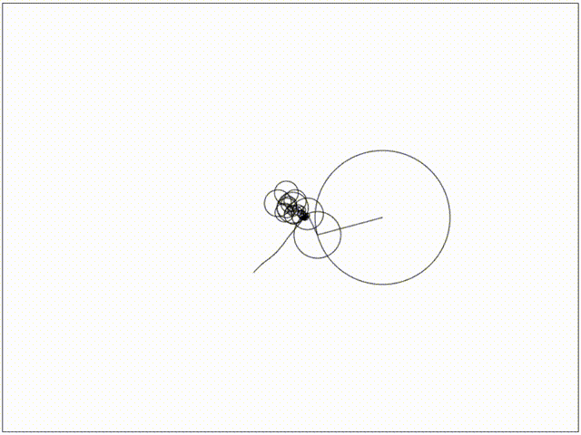
In the previous module, you have learned about the relevant mathematical principles of FFT and its application in MATLAB. Here, you will simply understand from a graphical perspective:
What a Fourier transform does
Some practical uses of Fourier transforms
Some pointless but cool uses of Fourier transforms
So what is this thing?
Put simply, the Fourier transform is a way of splitting something up into a bunch of sine waves. As usual, the name comes from some person who lived a long time ago called Fourier.
Let's start with some simple examples and work our way up. First up we're going to look at waves - patterns that repeat over time. A wave can be split up into sine waves. That is, when we add up the two sine waves we get back the original wave.
The Fourier transform is a way for us to take the combined wave, and get each of the sine waves back out. In this example, you can almost do it in your head, just by looking at the original wave.
Why? Turns out a lot of things in the real world interact based on these sine waves. We usually call them the wave's frequencies. The most obvious example is sound – when we hear a sound, we don't hear that squiggly line, but we hear the different frequencies of the sine waves that make up the sound.
Being able to split them up on a computer can give us an understanding of what a person actually hears. We can understand how high or low a sound is, or figure out what note it is.
We can also use this process on waves that don't look like they're made of sine waves.
Let's take a look at this guy. It's called a square wave. It might not look like it, but it also can be split up into sine waves.
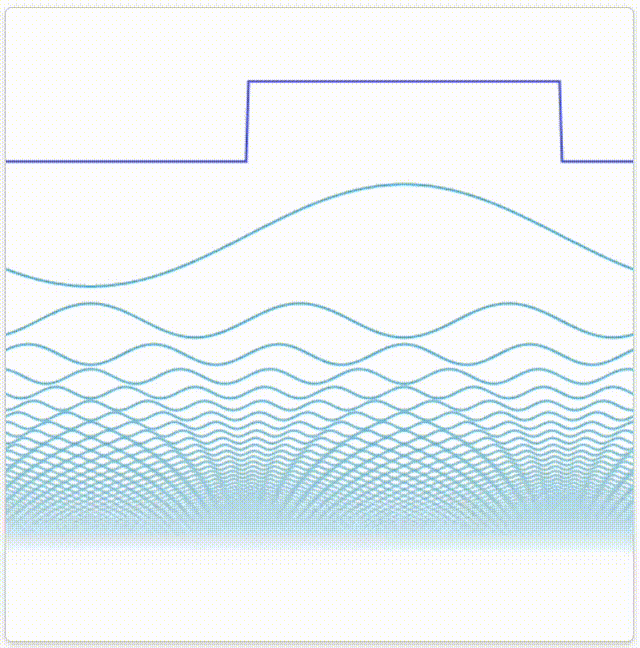
We need a lot of them this time – technically an infinite amount to perfectly represent it. As we add up more and more sine waves the pattern gets closer and closer to the square wave we started with.
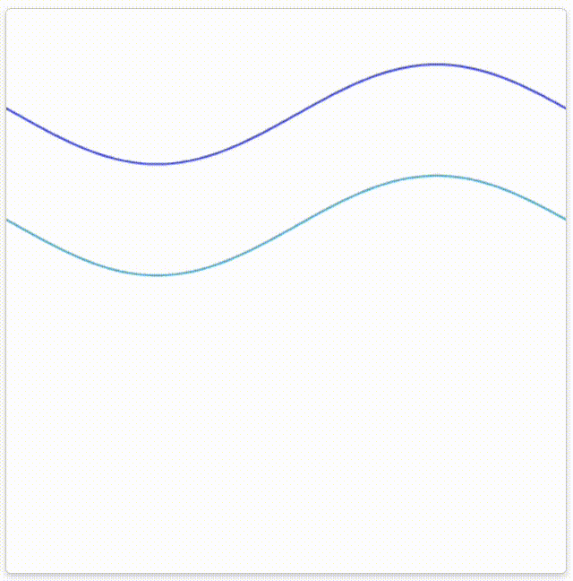
Or you can look at this square wave in terms of its relationship to the unit circle:
 Visually, you'll notice that actually the first few sine waves are the ones that make the biggest difference. With the wave number increasing, we have the general shape of the wave, but it's all wiggly. We just need the rest of the small ones to make the wigglyness flatten out.
Visually, you'll notice that actually the first few sine waves are the ones that make the biggest difference. With the wave number increasing, we have the general shape of the wave, but it's all wiggly. We just need the rest of the small ones to make the wigglyness flatten out.
We can actually use the fact that the wave is pretty similar to our advantage. By using a Fourier transform, we can get the important parts of a sound, and only store those to end up with something that's pretty close to the original sound.
Normally on a computer we store a wave as a series of points.
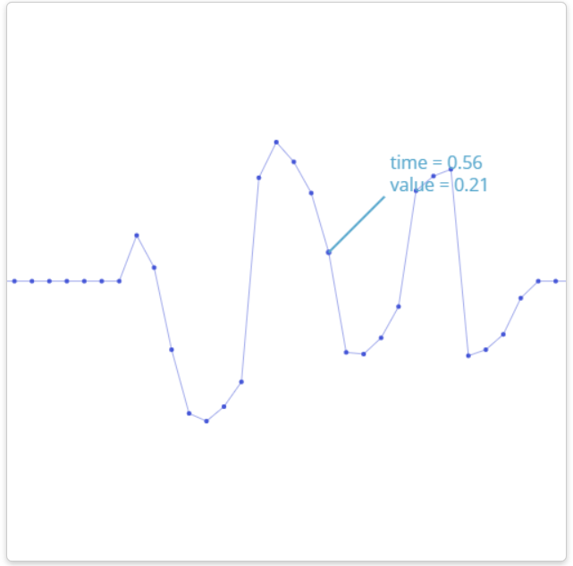
What we can do instead is represent it as a bunch of sine waves. Then we can compress the sound by ignoring the smaller frequencies. Our end result won't be the same, but it'll sound pretty similar to a person.
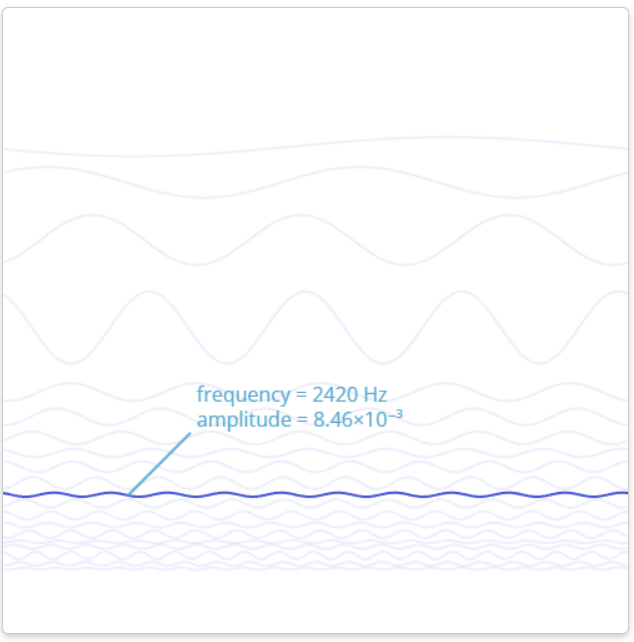
This is essentially what MP3s do, except they're more clever about which frequencies they keep and which ones they throw away.
So in this case, we can use Fourier transforms to get an understanding of the fundamental properties of a wave, and then we can use that for things like compression.
OK, now let's dig more into the Fourier transform. This next part looks cool, but also gives you a bit more understanding of what the Fourier transform does. But mostly looks cool.
Epicycles
Now at the start, I said it splits things into sine waves. The thing is, the sine waves it creates are not just regular sine waves, but they're 3D. You could call them "complex sinusoids". Or just "spirals".
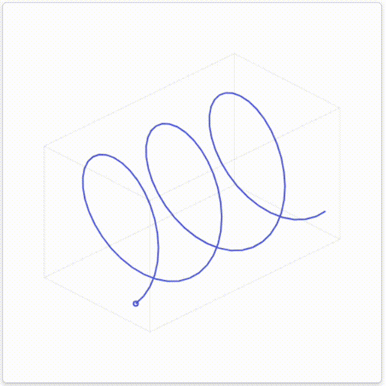
If we take a look from the side, they look like sine waves. From front on, though, these look like circles.
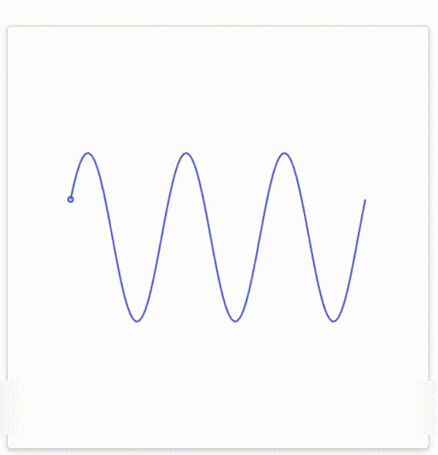
So far everything we've been doing has only required the regular 2D sine waves. When we do a Fourier transform on 2D waves, the complex parts cancel out so we just end up with sine waves.
But we can use the 3D sine waves to make something fun looking like this:
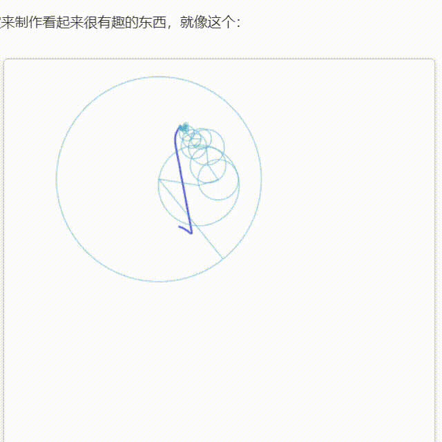
What’s going on here?
Well, we can think of the drawing as a 3D shape because of the way it moves around in time. If you imagine the hand being drawn by a person, the three dimensions represent where the tip of their pencil is at that moment. The x and y dimensions tell us the position, and then the time dimension is the time at that moment.
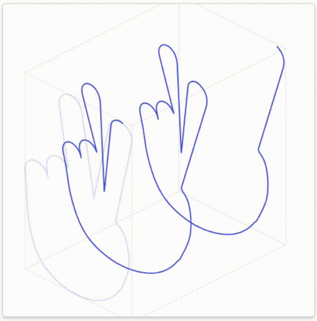
Now that we have a 3D pattern, we can't use the regular 2D sine waves to represent it. No matter how many of the 2D sine waves we add up, we'll never get something 3D. So we need something else.
What we can use is the 3D spiral sine waves from before. If we add up lots of those, we can get something that looks like our 3D pattern.
Remember, these waves look like circles when we look at them from front on. The name for the pattern of a circle moving around another circle is an epicycle.
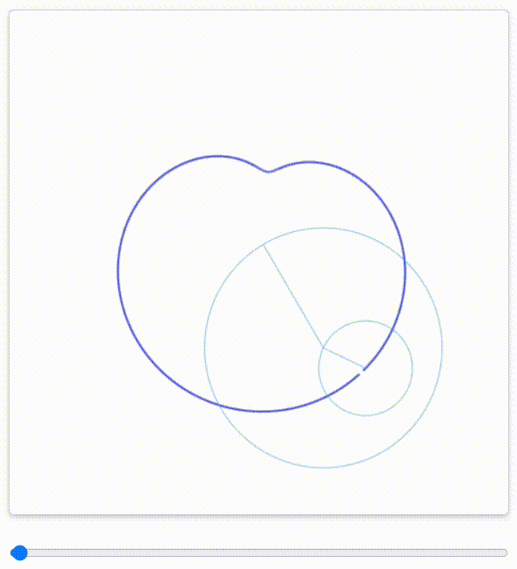
Like before, we get a pretty good approximation of our pattern with just a few circles. Because this is a fairly simple shape, all the last ones do is make the edges a little sharper. All this applies to any drawing, really!
Again, you'll see for most shapes, we can approximate them fairly well with just a small number of circles, instead of saving all the points.
Can we use this for real data? Well, we could! In reality we have another data format called SVG, which probably does a better job for the types of shapes we tend to create. So for the moment, this is really just for making cool little gifs.
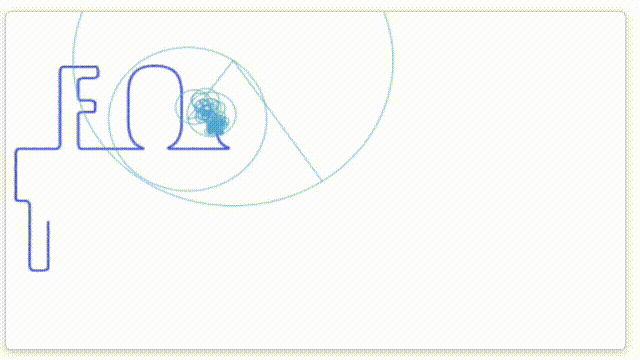
Regarding the method of Fourier transform of SVG graphics, the creator of this app, that is, me, has also tried it. In fact, you can extract the SVG path of the graphics in image processing software such as Adobe Illustrator (note: it must be a single path connected from beginning to end!), and then use a simple Python program to calculate the data points after FFT, and then run it on the graphics rendering program (I used processing before), you can generate the Fourier transform effect of the image. For details, please refer to the Bilibili video FourierCircleDrawing.
This is the Fourier transform effect I made based on the above video. I gave it to my mother as a birthday gift:
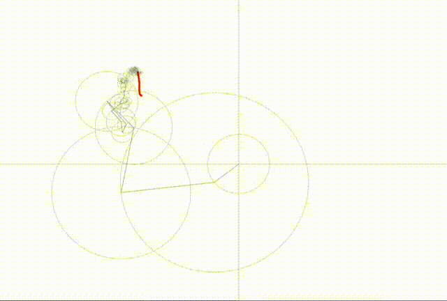
Of course, there are related effect production methods in the document below this module (A Tale of Math & Art: Creating the Fourier Series Harmonic Circles Visualization), the effects are as follows:
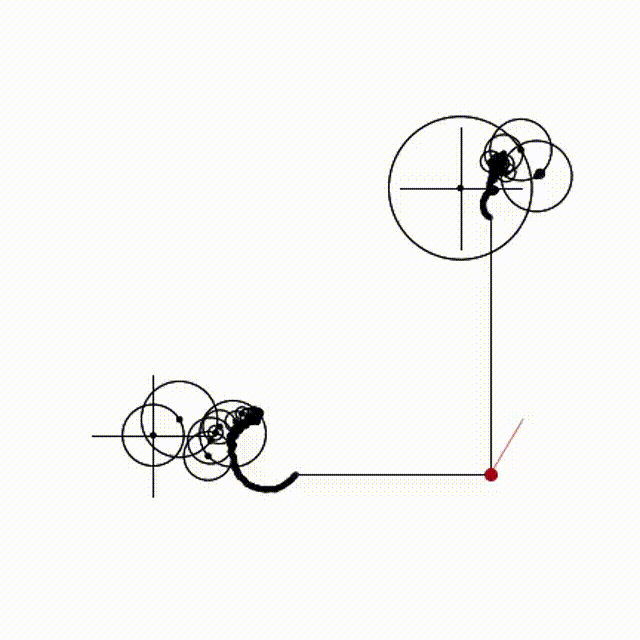
There is another type of visual data that does use Fourier transforms, however. (See document below)